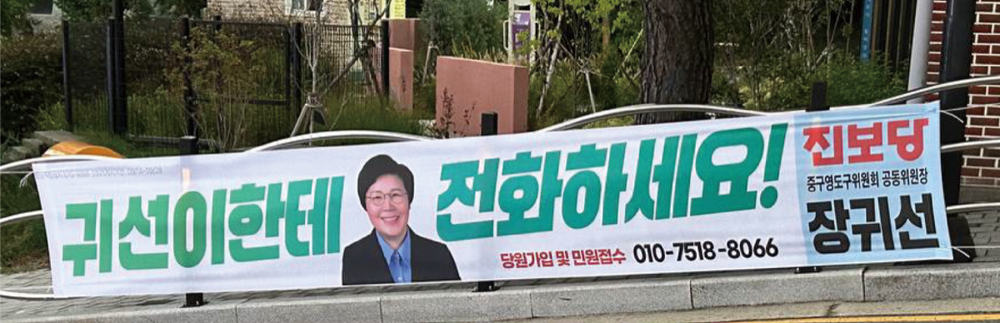
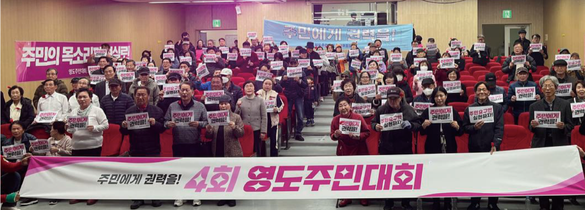
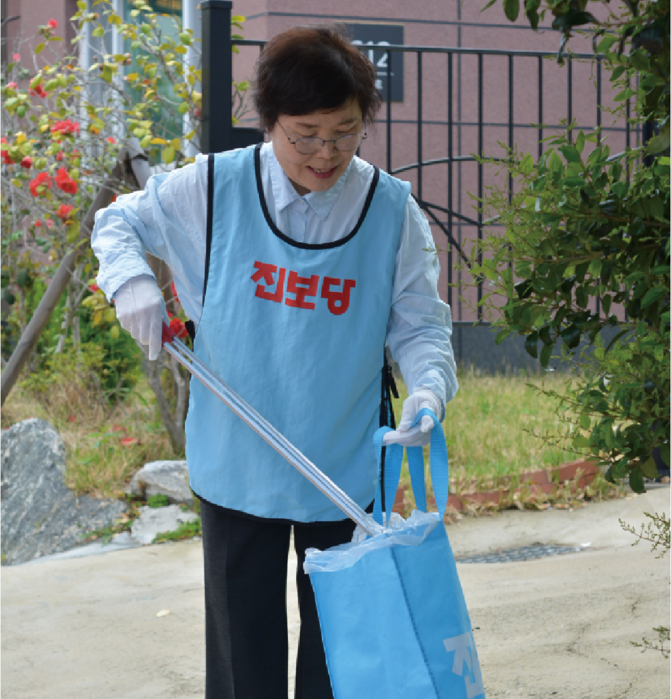
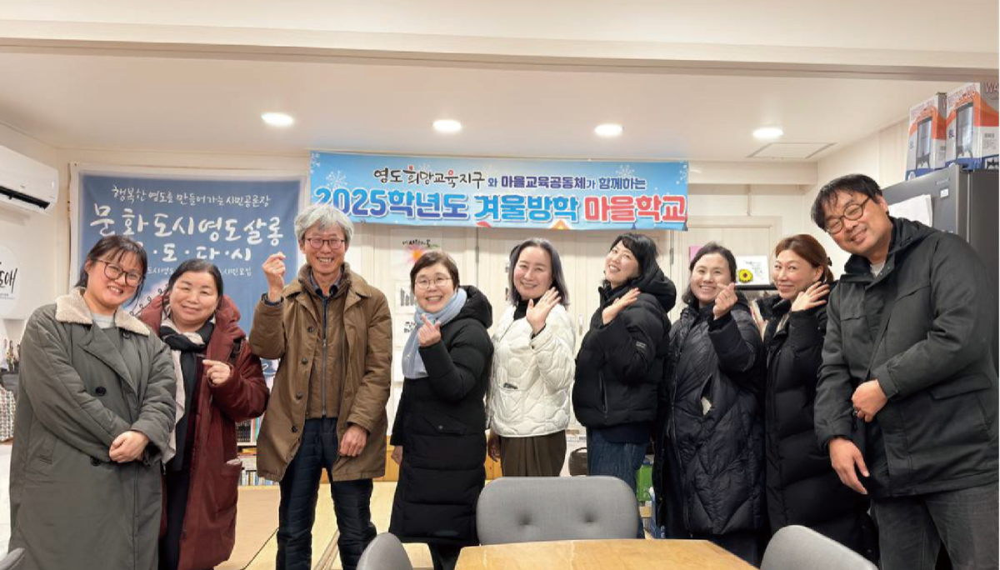
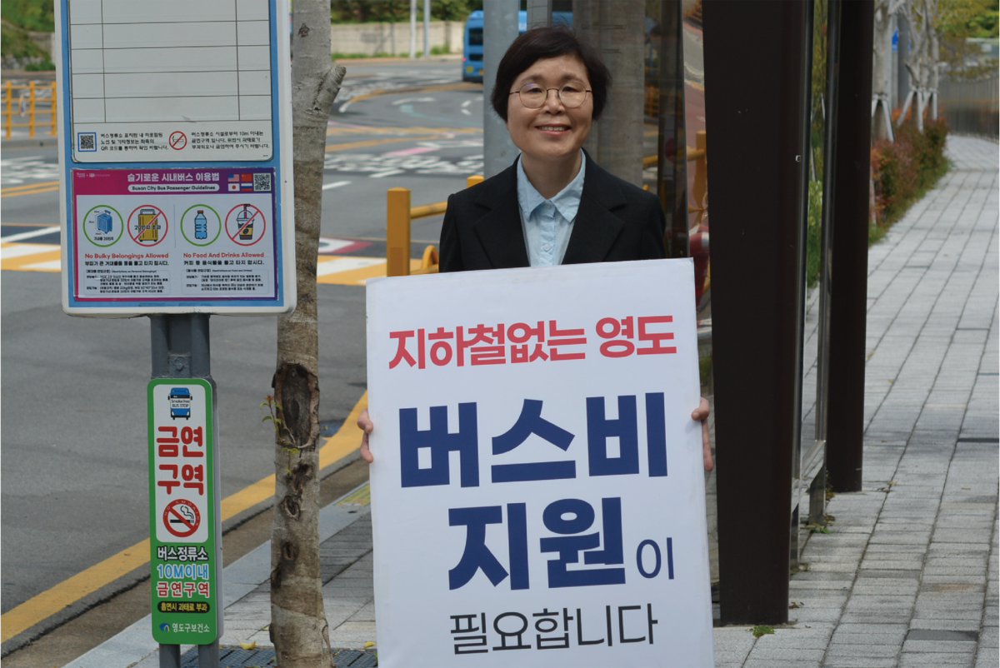
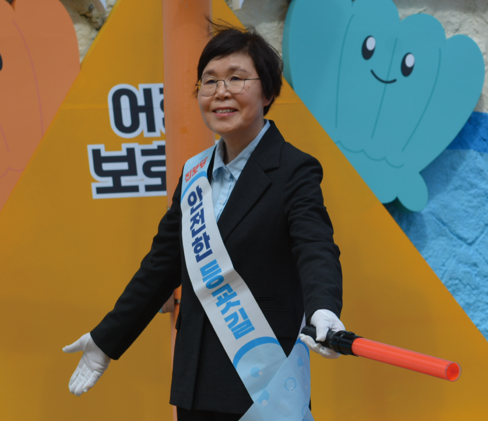
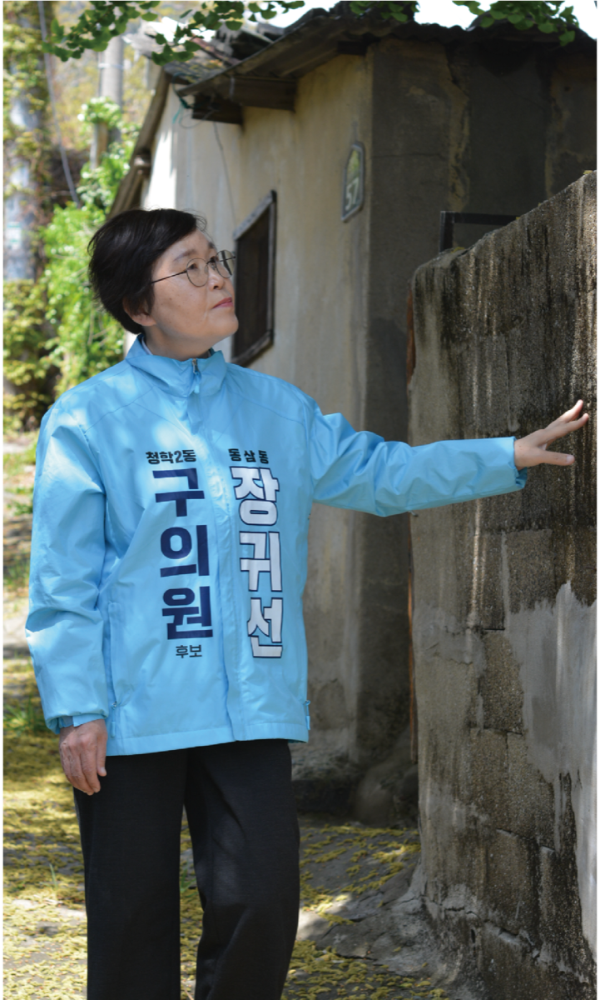
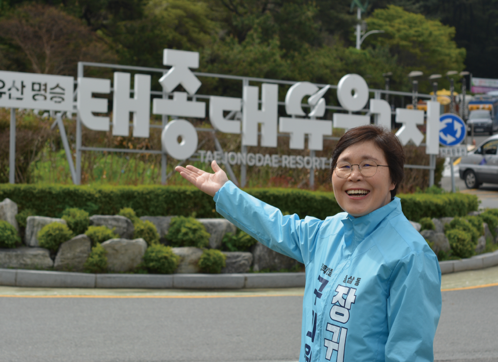

청학2동, 동삼1·2·3동 구의원 후보
주민에게 빚져야 주민께 봉사로 갚습니다. 10만원까지는 연말정산 시 전액 돌려받습니다. 청학2동, 동삼1·2·3동 주민의 후원이 간절합니다.
예금주 : 장귀선후원회 김기철
영도가 좋아, 영도사람이 좋아 영도에 들어온지 17년, 동삼동댁이 되었습니다. 제가 영도에 들어와서 처음 했던 일이 기억납니다.
영도에 고가도로가 들어서는 걸 반대해 천막을 치고, 길바닥에서 추운 겨울을 났습니다. 한진중공업 정리해고에 맞서 매일 밥과 국을 끓여대며 함께 했습니다.
롯데마트 광복점 오픈멤버로 들어가 민주노조 한다는 이유로 그 무거운 음료, 주류코너에서 갈비뼈가 부러져가며 7년 넘게 일했습니다. 그래서 그 악명높은 롯데그룹에 민주노조를 기어코 세워 냈습니다.
저 장귀선은 한다면 하는 사람입니다.
대학을 졸업하고 40년, 한 번도 한 눈 팔지 않고 언제나 가장 낮은 곳에서 주민들과 함께 해 왔습니다. 아이를 들쳐 업고 노무현 국회의원 당선을 위해 뛰어 다녔고, 늦은 밤 글 모르는 어르신들과 함께 딸아이를 책상에 앉혀놓고 한글을 10년 넘게 가르쳤습니다.
언제나 이 마음 변치않고 주민들과 함께 하고자 합니다.
저, 장귀선의 손을 잡아 주십시오.





장귀선은, 주민의 힘을 믿습니다!
"역세권 지역, 65세이상 어르신들은 무료로 지하철 타고 다니지만 영도는 버스 안타고는 움직일 수가 없어요"
기성정치인이 한말 "돈이 없다" "그게 되겠느냐"
주민들이 하신 말 "영도는 너무 억울하다. 1~2만원이라도 좋으니 지원좀 해달라"

집앞에서 학교앞까지 교통안전지도사가 함께 동행하는 '워킹스쿨버스'
아이들의 안전한 등굣길을
보장하겠습니다!
※ 이재명정부, 2026년부터 전국, 전학년 워킹스쿨버스 확대 시행발표. 서울 성동구 워킹스쿨버스 시행으로 학부모 만족도 98%

'스쳐가는 관광지'가 아닌 도시섬으로서
주민들이 살기 좋은 영도,
머물고 싶은 영도로!

먹고, 자고, 맘껏 즐길 수 있는 곳으로!
구의원은 3등까지 당선!
살림살이 꼼꼼히 살피는
구의원은 장귀선
구의원선거 투표용지
예금주 : 장귀선후원회 김기철